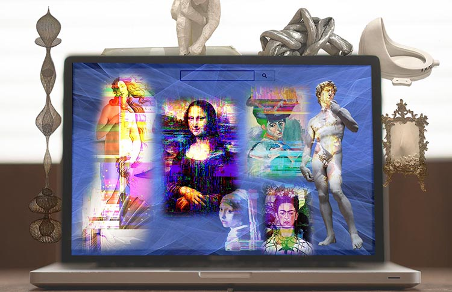

Home | Remix Montage | Animated Montage | 3D Modeling | Processing Project | Net Art | 75 P5 Project
In the modern ages, not many people visit artworks personally and because of that, many people have a distorted sense of artworks like the Mona Lisa in which they believe it is grander than it actually is in real life. Popularity of old artworks overwhelm the new, and in addition to that, people feel that the conceptual themes newer artworks frequently take on is controversial. People grew up being taught that famous pieces like the David and Mona Lisa are art, so this new round of artwork deviating from easy comprehension and material you can touch, begs the question of what constitutes as “art”?”
